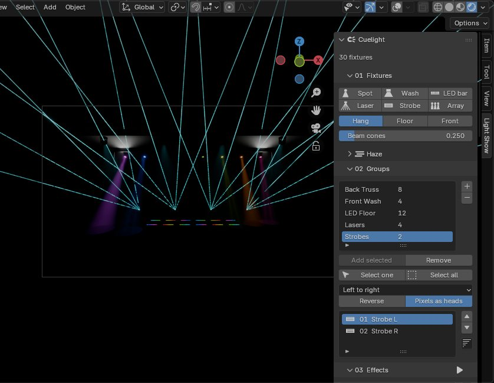
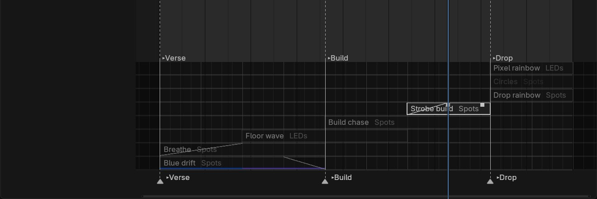

Overview
Cuelight is a Blender extension for concert light shows. You place fixtures, group them, stack effects, cue them to the song and render, without keyframing a single light by hand. It works in EEVEE and Cycles, and it's built for music videos, lyric videos and short films that need a stage.
A show comes together in four moves:
- Place. Spots, washes, LED bars, lasers and strobes in one click, or a whole row, arc, ring or grid. Add haze and the beams show.
- Group. Put fixtures in named groups and choose which way effects travel through them.
- Cue. Stack effects on groups, lock them to the song's tempo, and let cues decide what plays in the verse, the build and the drop.
- Render. Bake the show to keyframes. Renders and render farms then play it without Cuelight installed.
Everything lives in one sidebar tab in the 3D viewport, Light Show, in six numbered panels: 01 Fixtures, 02 Groups, 03 Effects, 04 Music, 05 Cues and 06 Bake. Effect layers also show as bars on Blender's own Timeline.

Install and a first show
Install
- Download
cuelight-1.0.0.zip. - Drag it into Blender, or go to Edit → Preferences → Get Extensions → Install from Disk.
- In the 3D viewport, press N and open the Light Show tab.
A first show in five minutes
- 01 Fixtures → Array. Add 8 spots in a line. The array makes a group of them for you.
- Haze → Add haze, so the beams show in the air.
- 04 Music → Load song. Cuelight puts it in the sequencer, works out the tempo and says how sure it is.
- 03 Effects → +. Add Chase, then Rainbow with Spread at 1. Press play.
- Presets → Add show → EDM Drop drops a whole section in at the playhead.
- 05 Cues → Cue here at each section of the song.
- 06 Bake → Bake show, then render.
Fixtures
Every fixture is an Empty holding control properties, and effects only ever write those properties. Simple drivers carry them to the lights and glowing parts, so a file keeps working with Cuelight uninstalled and auto-run scripts off.
| Type | What you get | Defaults |
|---|---|---|
| Spot | Moving head with pan, tilt and zoom (4° to 30°), a visible beam and an optional gobo | 3000 W, white, full |
| Wash | Moving wash, as a soft spot (20° to 70°) or a disk area light | 1500 W |
| LED bar | A strip of pixels; every pixel is its own light | 16 pixels, 1 m long |
| Laser | A fan of thin beams on a pan/tilt mount; zoom sets the fan's spread, up to 60° | 5 beams, 25 m long |
| Strobe | High-output area light with a glowing face | 6000 W, starts dark |
- Control properties. Each fixture carries
cl_intensity,cl_color,cl_pan,cl_tilt,cl_zoomandcl_strobe, plus power, beam strength, beam length and gobo. Strobe Hz on a fixture flashes it on its own, at least one frame on per flash. - Arrays. Line, arc, circle or grid, with count, spacing, radius, arc angle and rows. Arcs and rings turn each fixture to face the centre.
- Mounting. Hang (beam down, as from a truss), Floor (beam up) or Front (beam toward the audience).
- Gobos. Dots, Spokes, Ring, Breakup, or any image. Cycles projects the gobo through the light. EEVEE can't project light textures, so the visible beam cone shows the pattern as streaks.
- Haze. One button adds a volume box fitted round the rig and sets EEVEE up for sharp beams, with a density slider. Adding haze turns the stylised beam cones down to 25%, because the haze now draws the real beams.
Groups
A group is a named, ordered set of fixtures. Its order and direction decide how effects travel across it.
- Making one. Select fixtures and press +; members are ordered left to right. Arrays make their own group.
- Order. Add or remove selected fixtures, move members up or down, or sort by position, height, name or angle round the 3D cursor.
- Direction. Left to right, right to left, centre out, outside in, or random. Centre out and outside in move mirrored fixtures together, so a chase opens from the middle. Reverse flips any of them, and one effect can override its group's direction.
- Pixels as heads. On, every LED pixel is its own light, so a chase runs pixel by pixel. Off, each bar acts as one light.
- Selecting. Click a member to select just that fixture and see its controls; Select all selects the whole group.
Effects and layering
Fourteen effects ship built in, and any number of them stack as layers on any group.
| Effect | Drives | What it does |
|---|---|---|
| Chase | Intensity | Steps light across the group: width, tail, bounce, floor level |
| Wave | Intensity, pan, tilt or zoom | A sine, triangle, saw or square wave rolling through the group |
| Strobe | Intensity | Flashes in Hz or locked to the beat, with flash length and chance |
| Pulse | Intensity | Breathe (smooth) or Hit (snap on, decay) |
| Sparkle | Intensity | Random heads flash and fade |
| Flicker | Intensity | Smooth random flicker, with optional frame jitter |
| Full on | Intensity | Every head at a fixed level |
| Blackout | Intensity | Everything to black; use fades for a slow fade-out |
| Colour fade | Colour | Fades through two or more colours, with a hold |
| Rainbow | Colour | Round the colour wheel, or swinging across part of it |
| Fan | Pan or tilt | Spreads heads apart from the middle of the group and back |
| Sweep | Pan, tilt or diagonal | Swings beams side to side or up and down |
| Circle | Pan and tilt | Traces circles |
| Figure 8 | Pan and tilt | Traces a sideways figure 8 |
- Every layer has a group, a start and end frame, fades in and out (beats or seconds), a blend mode, an opacity, a speed, a spread across the group and a direction.
- Blend modes. Replace fades from what's below toward this layer by its opacity. Add adds on top. Multiply scales what's below, which suits masks and dimmers. Max takes the highest.
- Speed. In beats (locked to the song), seconds or Hz. Beat-locked effects count from the song's beat 1, so a chase that starts mid-bar still lands on the grid. One click sets ¼, ½, 1, 2, 4, 8 or 16 beats per cycle.
- Spread. How much of a cycle is spread across the group: 0 moves every head together, 1 puts one full wave across it.
- Intensity starts from black. Once any effect drives a fixture's intensity, the stack starts from black, as on a lighting console. Colour and position still start from the fixture's own values.
- Home values. When effects let go, each fixture returns to its own look. While effects play, the fixture panel edits that home look, so your change is kept.
Music
Load song sets everything up in one step and says how far to trust its tempo: Locked when it's confident, Check by ear when it isn't. It takes WAV, MP3, OGG, FLAC, M4A or AIFF, and needs nothing beyond Blender itself.
Tempo detection
Cuelight finds the beat from how often the song's hits repeat, and scores its confidence on three checks: how clearly one tempo stands out, how much of the song's energy lands on the beats, and how many beats actually have a hit. A clean beat scores 100%, a busy mix around 85%, a sustained pad 0%. Under 50% counts as unsure.
The BPM editor
It opens on its own when detection is unsure, or from the Editor button.
- Song strip. The song's hits under the beat grid, eight bars around the playhead, so you can see whether hits sit on the lines.
- Heard. The tempos the detector found, often the real one plus half and double time. One click switches tempo and lines the grid up.
- Tempo. ÷2, −1, −0.1, +0.1, +1, ×2, Tap and Detect. In range listens only inside the preview range, for songs whose intro has no clear beat.
- Grid. Move beat 1 by a frame, or by a whole beat when bar 1 is wrong. Fit grid slides beat 1 onto the hits without changing bar numbers.
- Metronome. A click on every beat, higher on each bar, to check the grid by ear. It's muted in renders.
Audio links
Cuelight splits the song into bass, mid, high and overall energy, frame by frame, and saves it with the file. Any layer can follow a band: it can drive the layer's intensity, its speed, or any of its settings, with gain, threshold, attack and release.
Cues
A cue is a named point in the song plus the layers that play from there until the next cue: Verse, Build, Drop.
- Cue here adds a cue at the playhead, holding whatever plays there now. New cues snap to the bar.
- Choosing layers. With cues on, each layer gets a radio button that puts it in or out of the selected cue. The checkbox stays a mute that applies everywhere.
- Crossfades. A cue's fade (in beats) crossfades from the cue before it. A layer that's in both cues carries straight through.
- A dark stage. With cues on, every fixture the show uses sits at black unless the current cue lights it.
- On the beat. Cues stay on their beat when the tempo changes, and show as ▸ markers on the timeline, with jump buttons in the panel.
Timeline lanes
Turn on Cuelight in the header of a Timeline or Dope Sheet, and every layer becomes a bar you can move with the mouse.

- Drag a bar to move it, an end to trim it, and the small handles on its top corners to set fades.
- Snapping to beats by default, to bars with Shift, none with Ctrl.
- Right-click a bar to mute, duplicate, trim to the playhead, snap or delete it.
- Clicks off a bar go straight to Blender, so scrubbing and selecting work as usual. Lanes need some height: drag the Timeline taller.
Presets
Eight built-in show sections drop in at the playhead, and your own effects and shows save to a library or a JSON file you can share.
| Built-in show | Length | What it does |
|---|---|---|
| EDM Drop | 8 bars | Rainbow chases and circles, pixel hits, quarter-beat strobes, fanning lasers |
| Slow Ballad Wash | 16 bars | Warm breathing colour and slow drifting spots |
| Rock Chase | 8 bars | Bouncing white and amber chases over a red wash |
| Strobe Build | 8 bars | The strobe rate doubles every two bars while the rig fades up |
| Laser Fan Sweep | 8 bars | Lasers fanning open and closed while tilting |
| Rainbow Pixel Wave | 8 bars | A rainbow rolling down every LED pixel |
| Breakdown Breathe | 8 bars | Everything slows to a blue and violet breath |
| Blackout Hits | 4 bars | Full-rig white hits every other beat, black between |
Built-ins target roles (spots, wash, LEDs, lasers, strobes), not group names, so they fit any rig. Positions are stored in beats, so a show saved at 128 BPM lands on the same bars in a song at 96.
Rendering
Live preview plays the show as you scrub; Bake show writes it to keyframes, so a render never depends on Cuelight.
- Bake runs the same engine for every frame and writes keyframes only for what an effect touched. With Simplify on, it keeps only the keys needed to stay within a hair of the live show.
- Clear bake removes only Cuelight's keyframes, so your own animation stays.
- Render farms. A baked file renders on a machine without Cuelight, with auto-run scripts off:
blender -b show.blend -a. - File size. Busy shows bake to a lot of keyframes. Save with Compress on: about nine times smaller.
- Glow. EEVEE dropped bloom in Blender 4.2. A compositor Glare node set to Bloom brings it back.
The demo stage
One script builds a full rig and cues a show to any song. It reads the song's loudness bar by bar to find the quiet, building and full stretches, then lights each one.
- The rig. 8 moving heads, 4 washes, a 12-bar LED floor, 4 lasers over the crowd, 2 strobes, haze, a camera and bloom.
- The song. It finds the tempo on the chosen stretch to within 0.02 BPM and starts the show on a downbeat.
- The show. Blue breathing for breakdowns, white chases and a speeding strobe for builds, colour, circles and lasers when the band is full, a cue at every change, and a fade to black at the end.
blender --python demo/build_demo_stage.py -- --song "song.mp3" --start 2:30 --bars 40 --save show.blendWithout a song it makes its own track. Songs are never copied into the file: the demo links to the song where it sits.
Writing an effect
A new effect is one function and one decorator, in a module under cuelight/effects/builtin/.
from ..registry import Param, register_effect
@register_effect("heartbeat", "Heartbeat", {"intensity"},
params=[Param("level", 1.0, min=0.0, max=1.0, label="Level")],
speed=(1.0, 'BEATS'))
def heartbeat(idx, n, t, p):
ph = p.phase(idx, n, t) % 1.0 # spread and direction already applied
thump = (ph < 0.08) | ((ph > 0.18) & (ph < 0.26))
return {"intensity": thump * p.level}- It receives each head's place in the group (
idx, so one call covers the whole group), the group size, cycles elapsed with tempo already applied, and its settings. - It returns any of intensity, colour, pan, tilt, zoom and strobe. Anything it leaves out passes through.
- It gets for free sliders in the panel, presets, baking, cues and audio links.
How it works
Effects never touch a light: they write six control properties on each fixture, and plain drivers carry those to the lights. That one rule is why a baked show renders anywhere.
- Live preview runs on every frame change and writes only the values that changed.
- Bake runs the same evaluator over every frame, so a baked show matches what you saw while scrubbing.
- Drivers use Blender's simple expressions only, so a baked file needs no Python at all.
| Measured on 108 fixtures, 228 lights, 6 layers | Time |
|---|---|
| Evaluating every layer, per frame | 1.3 ms |
| Evaluating and writing changed values, per frame | 3.5 ms |
| A full frame change in Blender, drivers included | 18 ms |
| Baking 30 seconds at 24 fps | 5.4 s |
153 automated tests cover every fixture, effect, blend mode and cue rule, baking and rendering without Cuelight installed, tempo detection and presets. A separate test drags the timeline lanes with real mouse input.
Known limits
| Limit | Workaround |
|---|---|
| EEVEE can't project gobos through haze | The beam cone shows the pattern as streaks; Cycles projects it |
| LED bars and lasers don't light other surfaces in EEVEE | Render in Cycles, or add a few low fill lights |
| Keyframes on pan or tilt win over effects on the same channel | Use movement effects, or keyframe the fixture object instead |
| One tempo per song | Split a tempo change into two scenes |
| A short Timeline has no room for lanes | Drag it taller, or use a Dope Sheet |
Questions, bugs or a show you'd like lit? Get in touch, or email ruytham4a@gmail.com.